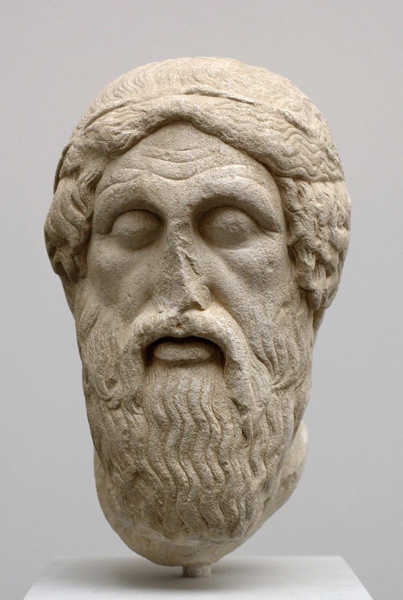
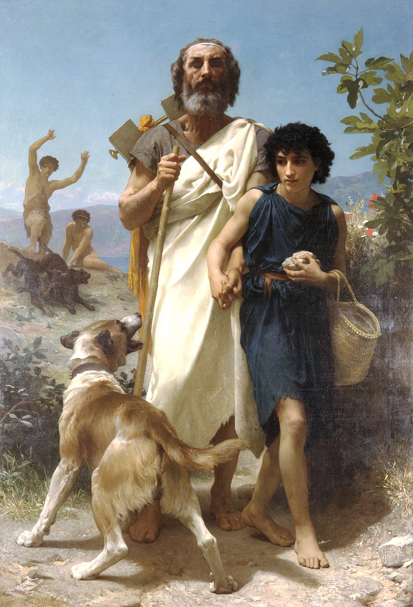

Гоме́р (др.греч. Ὅμηρος) — легендарный древнегреческий поэт-сказитель, создатель эпических поэм «Илиада» (древнейшего памятника европейской литературы) и «Одиссея». Жизнь датируется VIII—VII вв. до н. э. (иногда IX в. до н. э.), однако историчность всё же не бесспорна. Предположительно, был аэдом (профессиональным исполнителем эпических поэм в классической Греции). Примерно половина найденных древнегреческих литературных папирусов — отрывки из сочинений Гомера. Первым воспитателем эллинов называл Гомера Платон.

Скульптурная голова Гомера (около 460 до н. э.)
Место его рождения также остаётся загадкой: несколько городов Древней Греции — Смирна, Хиос, Афины, Аргос и другие — оспаривали право называться родиной великого поэта. Творчество Гомера стало фундаментом древнегреческой культуры и оказало огромное влияние на развитие всей европейской литературы. «Илиада» и «Одиссея» — это масштабные поэмы, написанные гекзаметром, повествующие о событиях Троянской войны и её последствиях. «Илиада» посвящена гневу Ахилла и ключевым эпизодам войны, а «Одиссея» рассказывает о долгом и полном опасностей возвращении на родину царя Итаки Одиссея. Обе поэмы не только являются выдающимися художественными произведениями, но и содержат бесценные сведения о древнегреческой мифологии, религии, общественном устройстве и этических идеалах той эпохи. Гомеровский эпос оказал колоссальное влияние на античную литературу: его цитировали, ему подражали, его герои стали архетипами. Философы, такие как Платон и Аристотель, анализировали его тексты, а Александр Македонский, по преданию, всегда возил с собой список «Илиады». В более поздние эпохи к Гомеру обращались Данте, Шекспир, Гёте, Пушкин и множество других великих авторов. Его поэмы переведены на сотни языков, по их мотивам сняты фильмы, поставлены спектакли и созданы музыкальные произведения.

Гомер и его проводник (1874). Вильям-Адольф Бугро